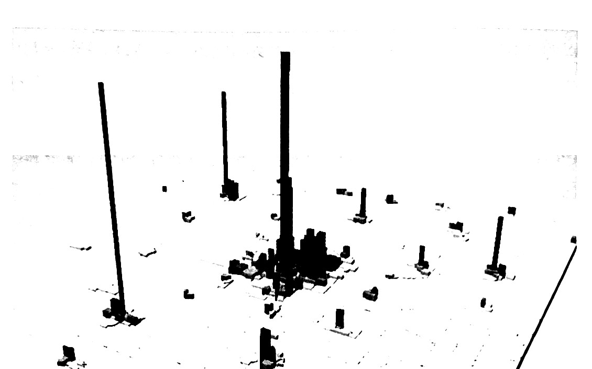

3주차. 도시의 생성 (2)
CHAPTER 05 도시들은 어디에서 생성되는가
PART 02 도시의 생성 · 교재 p.89~103
“우리는 길을 잃지 않았다. 단지 우리가 어디에 입지할 것인가에 도전을 받고 있다.” — 미취 헤드버그
기업의 입지선정은 다차원의 주도권 경쟁(tug of war)의 결과다
기업을 상이한 방향으로 끌어당기는 힘 — 낮은 운송비용 · 생산적인 노동자 · 생산에서 외적인 경제를 창출하는 다른 기업들 · 낮은 에너지 비용
01 운반−집약적 기업
운송비용이 지배적인 입지요인일 때 · 교재 p.89~94
운반−집약적 기업 (transport-intensive firm)
운송비용이 총 비용에서 상대적으로 큰 비중을 차지하는 기업
목적은 생산요소 운송비용(원산지→생산지)과 생산물 운송비용(생산지→시장)의 합인 총 운송비용을 최소화하는 입지를 고르는 것
- 단일 운송가능 생산물 — 단일 생산물의 고정된 양을 생산하고 하나의 시장으로 운송한다
- 단일 운송가능 생산요소 — 하나만 원산지에서 운송된다. 나머지는 편재(ubiquitous)되어 어디서나 같은 값에 살 수 있다
- 고정요소 비율 — 가격과 상관없이 하나의 방법만 쓴다. 요소대체가 없다
- 고정된 가격 — 기업은 가격에 영향을 미치지 않을 정도로 작다
→ 총 수입도 생산요소비용도 모든 입지에서 같다. 공간에 따라 변하는 유일한 비용은 두 운송비용이다
금전적 중량이 방향을 정한다
1톤의 야구방망이를 만들려면 5톤의 목재가 든다 — 중량−감소 행위다
금전적 중량
= 물리적 중량 × 운송료
생산물 운송의 단위비용이 더 높지만(목재는 던져 실을 수 있고 완성된 방망이는 조심히 운반해야 한다), 생산공정에서의 중량 감소가 운송료 차이를 압도한다
표 5−1 자원−지향적 기업에 대한 금전적 중량
→ 생산요소의 금전적 중량이 더 크므로 이 기업은 자원−지향적이다
자원−지향적 기업은 원산지에 붙는다
두 운송비용
생산요소 운송비용 = wᵢ · tᵢ · (10 − x)
생산물 운송비용 = wQ · tQ · x
→ 총 운송비용은 생산요소 원산지에서 최소화된다. 사탕무−설탕공장, 양파 건조공장, 광석 가공처리공장이 같은 예다
시장−지향적 기업은 시장에 붙는다
음료기업은 설탕 1톤 + 물 4톤(편재)으로 병에 든 음료수 5톤을 만든다 — 중량−증가 행위다
표 5−2 시장−지향적 기업에 대한 금전적 중량
생산물 운송이 비싼 세 가지 경우
생산물이 더 무거워서가 아니라 운송하는 데 더 비싸기 때문에 시장−지향적이 된다
- 부피가 큰 — 자동차조립기업의 생산물(조립된 자동차)은 생산요소(전선 묶음, 금속판)보다 부피가 크다. 1톤의 자동차를 수송하는 비용이 1톤의 부품을 수송하는 비용을 넘는다
- 부패하기 쉬운 — 제빵의 생산물은 생산요소보다 상하기 쉬워 제빵업자들을 소비자쪽으로 끌어당긴다
- 위험한 — 무기제조업자는 무해한 생산요소를 결합해 치명적인 생산물을 만든다. 위험한(혹은 부서지기 쉬운) 생산물의 장거리 운송을 피해 시장 인근에 입지한다
→ 거꾸로 생산요소가 부피가 크거나 부패하기 쉽거나 깨지기 쉽거나 위험하면 자원−지향적이 된다. 통조림 공장은 생과일을 냉장트럭으로 옮겨야 해서 농장 근처에 선다
02 중위입지의 원리
생산요소나 시장이 여럿일 때 · 교재 p.95~99
중위입지의 원리 (principle of median location)
중위입지가 총 통행거리를 최소화한다
중위입지는 통행목적지들을 두 개의 동일한 절반으로 나누어, 목적지들의 절반은 한 방향에 다른 절반은 다른 방향에 놓이게 한다
예시 — 기계를 수리하는 픽스잇(Fixit)의 가정
① 모든 생산요소(도구와 부품)는 편재해 운송비용이 영(0)이다
② 수리서비스의 가격은 고정되었고 1주일에 한 번 개별 공장을 방문한다
③ 개별 수리를 위한 공장으로의 통행은 별개의 통행을 요구한다
중위입지는 어디인가
A·B·M·C는 20마일 간격, D는 C로부터 100마일. M에서 C로 20마일 이동하면 동쪽 통행거리는 200마일(10×20) 줄지만 서쪽은 220마일(11×20) 늘어 총 통행거리가 증가한다
→ D의 공장이 13개로 늘면 중위입지가 D로 옮겨 간다. 대도시들에서 수요의 집중이 대도시들을 성장하게 한다
고객 간 거리는 입지선택에 무관하다
도시 D가 도시 C로부터 100마일 대신 300마일만큼 떨어져 있어도 중위입지는 여전히 도시 M이다
픽스잇의 총 통행거리는 도시 M에서 — 보다 높은 수준에서 — 여전히 최소화된다
→ 중요한 것은 어느 쪽에 목적지가 몇 개 있는가이지 그것들이 얼마나 멀리 있는가가 아니다. 중위입지로부터 멀어지는 이동은 과반수의 공장에 대한 통행거리를 증가시킨다
환적지점과 항구도시들
환적지점은 재화가 하나의 운송수단에서 다른 운송수단으로 옮겨지는 지점이다
가구공장은 지점 F에서 목재를, 지점 G에서 직물을 얻어 가구로 가공하고 지점 M의 해외시장에 판매한다. 생산요소의 금전적 중량 12달러(6+6)가 생산물의 9달러를 넘는 중량−감소 행위다
→ 진정한 중위입지는 없지만 항구가 중위입지에 가장 가깝다
항구도시들
- 시애틀 — 1880년에 제재소마을로 출발. 서부 워싱턴주에서 벌목한 통나무를 시애틀 제재소에서 가공한 후 다른 주와 나라들로 선적하였다
- 볼티모어 — 미국에서 제일 처음의 신흥도시(boomtown). 밀가루 제분소들이 주위 농업지의 밀을 가공해 서인도제도로 수출하였다
- 버펄로 — 밀가루 제분소의 중심지. 오대호를 가로질러 중서부 주들로부터 밀이 선적되었고, 버펄로에서 밀가루로 가공되어 철도로 동부 도시들에 운송되었다
→ 둘 다 밀가루 제분소마을이었으나 선박의 이용이 달랐다. 볼티모어는 생산물(밀가루)을 수출했고 버펄로는 생산요소(밀)를 수입했다
03 노동, 에너지, 그리고 집적의 경제
운송비용이 덜 중요해진 뒤에 남는 것 · 교재 p.99~103
운송비용이 덜 중요해졌다
역사적으로 자원−지향적 혹은 시장−지향적이었던 많은 산업에서, 이제 기업들은 생산요소 원산지와 시장으로부터 멀리 입지한다. 운송비용을 감소시킨 두 혁신 때문이다
1. 교통기술
빠른 해양선박과 컨테이너 기술이 선박운송 비용을 낮췄고, 철도와 트럭의 개선이 육상운송 비용을 낮췄다. 보다 빠르고 효율적인 비행기가 항공운송 비용을 낮췄다
2. 생산기술
생산요소의 물리적 중량이 줄었다. 1톤의 강철을 만드는 데 필요한 석탄과 광물의 양이 꾸준히 감소했는데, 개선된 생산방식과 철광석(운송되는 생산요소) 대신 고철(지역에서 구입 가능한 생산요소)의 이용 덕분이다
노동비용
노동은 생산비용의 대략 3/4을 차지한다. 노동자가 대도시 밖으로 통근하는 것은 비현실적이므로 노동은 지역 생산요소다
임금과 기업활동
바틱(Bartik, 1991)은 대도시 임금에 대한 기업활동의 장기 탄력성이 −1.0 ~ −2.0이라고 결론짓는다 — 임금 10% 감소가 기업활동을 10~20% 증가시킨다
신생기업 수의 탄력성은 약 −1.0. 임금 10% 증가가 창업을 10% 감소시킨다
기후는 임금을 통해 작용한다
노동자가 따뜻한 날씨를 선호한다면 내쉬균형을 위해 남부의 임금이 북부보다 낮아야 한다. 그렇지 않으면 남부로 이주해 같은 임금과 나은 날씨를 함께 얻으려 할 것이다
랩파포트(2007) — 1920년경부터 미국 주민들이 좋은 날씨를 지닌 곳으로 이주했고, 핵심 요인은 소비 편의시설로서 좋은 날씨의 가치 증가였다
→ 기업을 따라가는 노동자 대신에, 기업들이 노동자들을 따라간다
에너지 기술이 입지를 바꿔 왔다
- 물레바퀴 (19세기 전반기) — 에너지는 운송될 수 없는 지역 생산요소였다. 섬유제조업체들이 뉴잉글랜드의 시골 개울을 따라 공장을 세웠다. 물레바퀴 도시: 로웰 · 로렌스 · 홀리요크 · 루이스턴
- 증기엔진 (19세기 후반기) — 에너지를 운송 가능한 생산요소로 만들었다. 제약은 석탄 공급. 펜실베니아 석탄탄광 인근이나 항해 가능한 수로를 따라 입지했고, 이후 철도가 노선망을 따라 공장을 낳았다
- 전기 — 발전기는 1860년대에 향상되고 전기발동기는 1888년에 발명되었다. 벨트−기어 시스템이 개별 기계의 작은 전기발동기로 대체되었다. 첫 전기동력 공장은 나이아가라 폭포 수력발전설비에 인접했다
→ 전기의 개발은 입지결정에서 에너지의 중요성을 낮췄다. 다만 알루미늄은 에너지비용이 총 비용의 약 30%여서 여전히 값싼 전기를 따라간다
미국의 제조업벨트 — 성장과 쇠퇴
19세기 후반에 발전했다. 규모의 경제를 쓰려면 대규모의 이동 불가능한 자원(석탄·철광석)이 필요했고, 제조업벨트는 그 접근에 자연적 이점을 가지고 있었다
국가 전체 제조업 고용에서의 비중
1947년까지 70% → 2000년까지 약 40%
분산의 중요한 요인은 제조업벨트의 자연적 이점을 감소시킨 운송비용의 일반적인 감소였다
1970~2000년 인구 변화 (Glaeser, 1991)
감소 — 디트로이트 −7% · 클리블랜드 −28% · 피츠버그 −5%
증가 — 보스턴 +11% · 미네아폴리스 +50%
갈린 것은 인적자본이었다
쇠퇴한 도시들은 노동력에서 대졸자 비중이 낮았고, 성장한 도시들은 높았다
지난 40년간 저숙련 단순노무 수요는 줄고 (금융·법률서비스·의료 같은) 고숙련 지식 노동 수요는 늘었다. 교육받은 노동력을 지닌 도시는 그 전환에 준비가 되어 있었다
→ 대학 학위를 지닌 성인 인구 비중에 대한 인구성장의 탄력성 1.2 — 대졸자 비중 10% 증가가 인구성장률을 12% 높인다
CHAPTER 06 소비자도시와 중심지
교재 p.110~126
이발사: 당신은 몇 살입니까, 꼬마 신사분?
빌: 여덟살
이발사: 머리 깎는 것을 원합니까?
빌: 글쎄요. 저는 명백히 면도를 위해 오지는 않았습니다.
이제까지는 기업의 관점이었다. 이 장에서는 소비자의 관점으로 전환한다
소비재와 소비자 서비스에 대한 시장으로서의 도시. 소비자 의사결정이 어떻게 다양한 규모와 제품 다양성을 지닌 도시들을 생성하는가
01 입지에서의 독점적 경쟁
교재 p.110~114
독점적 경쟁 (monopolistic competition)
1. 진입에 대한 인위적인 장애물의 부재
특허나 규제가 없다. 다만 시장 진입은 비용을 수반하며 이를 고정된 창업비용으로 모형화한다. 식당업에 진입하려면 공간과 시설을 구입하거나 임대해야 한다
2. 제품 차별화
기업들은 유사하지만 완전한 대체재는 아닌 제품을 생산한다. 공간적 맥락에서는 입지와 접근성에서 제품을 차별화한다 — 중심에 위치한 식당은 변두리 식당보다 접근성이 낫다
→ 개별 기업은 좁게 차별화된 제품에 대해 지역 독점을 갖는다. 인근에서 유일한 이탈리안 식당일 수 있다. 그러나 입지나 제품에서 차별화된 다른 식당들과 경쟁한다
독점의 결과
장기비용곡선
C(q) = k + cq
ac(q) = k/q + c
k는 설립비용, c는 생산의 한계비용. 장기평균비용곡선은 음(−)의 기울기를 가지며 수평의 한계비용곡선에 점근적이다
→ 진입에 장벽이 없다면 이것은 장기균형이 아니다. 양(+)의 경제적 이윤을 보고 다른 기업들이 들어온다
진입과 독점적 경쟁
복점 — 잔여수요곡선이 왼쪽으로
두 번째 기업의 진입이 전형적인 기업의 잔여수요곡선을 왼쪽으로 민다. 진입은 위(낮은 가격) · 오른쪽(기업당 작은 수량) · 아래(높은 평균비용)로부터 이윤을 줄인다
장기균형 — 경제적 이윤이 영(0)
진입은 경제적 이윤이 영이 될 때까지 계속된다. 여기서는 네 기업의 사중복점이다. 개별 기업에 대해 MR = MC(이윤극대화)이고 가격 = 평균비용(영의 이윤)이다
→ 퇴출할 유인도, 진입할 유인도 없다. 내쉬균형이다. 균형 기업의 수는 n* = Q*/q*
공간적 맥락에서의 독점적 경쟁
도시 중심에 이문을 얻고 있는 이탈리안 식당 하나에서 출발하자. 두 번째 이탈리안 식당이 북부에 개업하면, 북부 사람들은 통행비용을 아끼려 새 식당으로 전환한다. 재화가 입지와 접근성 측면에서 차별화되는 것이다
진입이 가져오는 세 가지
(a) 시장가격이 감소하고
(b) 기업당 수량이 감소하며
(c) 생산의 평균비용이 증가한다
→ 기업당 이윤이 줄어든다
장기균형에서
가격은 평균비용과 일치하고 개별 기업은 영(0)의 경제적 이윤 — 즉 “정상” 회계이윤을 얻는다
도시는 수십 개의 이탈리안 식당을 갖는다. 개별 식당은 영업을 지속하기에 충분한 돈을 벌지만 다른 기업의 진입을 촉발할 만큼 벌지는 못한다
02 엔터테인먼트 기계로서의 도시들
왜 큰 도시가 더 다양한 재화를 갖는가 · 교재 p.114~118
최소시장규모
고정된 설치비용 k가 있으면 기업을 지탱하는 데 최소시장규모가 필요하다. 설치비용이 크면 장기평균비용곡선이 큰 생산량에 걸쳐 큰 음(−)의 기울기를 갖는다 — 큰 설치비용은 큰 규모의 경제를 뜻한다
도시 전체 수요 = d(p) · N
총량이 크려면 높은 1인당 수요이거나 큰 인구여야 한다
→ 시장수요가 생산에서의 규모의 경제에 비해 크다면 시장은 적어도 하나의 기업을 지탱한다
큰 도시에서는 팔리고 작은 도시에서는 안 팔리는 재화
1인당 수요가 낮은 재화는 기업을 지탱하려면 큰 인구가 필요하다. 큰 도시의 수요곡선은 평균비용곡선 위에 놓이고, 작은 도시의 수요곡선은 아래에 놓인다
→ 페루 음식에 대한 1인당 수요가 낮아 페루 식당은 큰 도시에서만 살아남는다
예술 — 미술관 전시, 음악과 연극의 라이브 공연 · 소매업 — 최신유행부터 중고까지 가격대 양 극단의 의류 상점 · 소비자 서비스 — 의료시술과 자조(self−help) 서비스
이발사와 뇌외과 의사
두 유형의 노동자가 신체의 거의 같은 부분에서 작업하지만, 그들은 생산에서의 규모의 경제에 비해 상이한 1인당 수요를 직면한다
이발사들
전형적인 사람은 매 2개월마다 이발한다 — 1인당 수요가 높다. 창업비용도 낮다: 한 벌의 가위, 대략 12입방미터(2×2×3)의 공간, 그리고 의자
→ 단지 수천의 인구를 갖는 도시에서도 살아남는다
뇌외과 의사들
인구의 적은 수만이 뇌수술을 필요로 해 1인당 수요가 낮다. 시설과 장비는 비싸 규모의 경제가 크다
→ 수백만의 잠재적 고객을 갖는 도시들에 입지한다
도시는 “엔터테인먼트 기계”다
교역도시와 생산도시가 이윤을 찾아 기업을 유인하듯이, 소비자도시는 재화와 서비스의 호의적인 혼합을 찾아 소비자를 유인한다
일부 유형의 소비자 재화와 서비스를 공급하는 기업들은 대도시에서만 살아남는다. 결과적으로 소비자 관심은 대도시들을 보다 더 크게 만드는 경향이 있다. 큰 노동력과 소비자 기반은 전시관·극장·스포츠 구단·특화된 의료시설을 유인한다
양(+)의 상관관계
1인당 라이브−공연 장소의 수가 상대적으로 큰 도시들이 평균적으로 더 빠르게 성장했다. 1인당 식당의 수도 같다
음(−)의 상관관계
영화관과 볼링장의 수는 인구성장과 음의 상관관계를 보였다
→ 지난 수십 년간 가장 생산적인 엔터테인먼트 기계들 — 뉴욕 · 시카고 · 샌프란시스코 — 이 가장 급속한 성장을 경험하였다 (Glaeser, Kolko, and Saiz, 2001)
03 중심지이론
지역 전체에 몇 개의 도시가, 어떤 크기로 생기는가 · 교재 p.119~126
중심지이론
독점적 경쟁모형이 하나의 지역경제를 다뤘다면, 중심지이론은 지역적 관점에서 두 질문에 답한다 — ① 얼마나 많은 도시들이 발달할 것인가 ② 도시들이 어떻게 규모와 소비재의 다양성에서 상이할 것인가
- 고정된 인구 — 지역의 인구는 고정되었다
- 편재한 생산요소들 — 모든 생산요소는 지역의 모든 입지에서 동일한 가격에 구매할 수 있다
- 균등한 수요 — 개별 제품에 대해 1인당 수요는 지역 내 모든 입지에서 동일하다
- 완전한 대체재 — 상이한 기업들의 제품은 완전한 대체재다. 비교구매의 이점이 없어 동일 제품 기업들의 군집 이점이 없다
- 재화들 간 보완성 부재 — 상이한 재화는 보완적이지 않아 상이한 재화 기업들의 군집 이점도 없다
→ 이 이론은 도시들의 위계적 체계를 예측한다. 큰 도시에서는 원하는 어느 것이나 얻을 수 있으나 작은 도시에서는 그러지 못한다
세 재화, 하나의 지역
→ 세 재화는 규모의 경제에 비해 1인당 수요에서 상이하다. 이 차이가 도시의 크기와 다양성의 차이를 낳는다
재화별 최소시장규모와 지역 내 개수
1인당 수요가 규모의 경제에 비해 의류는 작고, 식료품은 중간이며, 이발은 높다
중심지 위계가 생긴다
기업들은 고객까지의 거리를 최소화하는 중위입지를 고른다. 상점 근로자들이 그 인근에 살아 그곳의 인구밀도가 올라간다
→ 이 지역은 크기와 소비자 재화의 다양성에서 상이한 총 11개의 도시를 갖는다. 큰 도시 1 + 중간 도시 2 + 작은 도시 8, 그리고 작은 도시는 이발소만 갖는다
도시들은 아래로 수출한다
위계의 최상위에서 가장 큰 도시는 전체 조합의 재화를 공급하고, 최하위에서 가장 작은 도시들은 하나의 재화만 공급한다. 개별 도시는 보다 낮은 순위의 도시들에 재화를 수출한다
→ 큰 도시는 중간·작은 도시에 의류를 수출하고, 중간 도시는 작은 도시에 식료품을 수출한다. 낮은 끝에서 작은 도시들은 재화를 수입한다 — 그 소비자들은 식료품과 의류를 위해 보다 큰 도시로 통행한다
중심지이론으로부터의 세 통찰
- 규모와 다양성에서의 차이 — 세 재화가 규모의 경제에 비해 1인당 수요에서 다르기 때문에 생긴다. 만일 세 재화가 동일한 1인당 수요를 갖는다면 세 재화의 시장구역이 일치해 이 지역은 네 개의 동일한 도시를 가질 것이다
- 큼은 적음을 의미한다 — 큰 도시가 공급하는 추가적인 재화는 1인당 수요가 낮은 재화다. 그런 상점은 적은 숫자로 존재하므로 적은 수의 도시만 클 수 있다. 이발사는 매우 많아 작은 도시가 매우 많다
- 쇼핑 경로 — 소비자들은 보다 큰 도시로만 통행한다. 중간 도시 주민은 옷을 사러 큰 도시로 가지만, 다른 중간 도시나 작은 도시로는 가지 않는다
인디애나의 중심지역들, 2014
인구조사표준지역을 퍼즐 조각으로 그리고 헥타르당 노동자수(고용밀도)만큼 밀어 올린 지도다

오설리반, 『오설리반의 도시경제학』 제9판, 박영사, 2022, 그림 6−6 (p.124)
→ 가장 큰 집중은 인디애나폴리스 대도시지역이며 주의 지리적 중심에 가깝다. 여타 군집들은 면적이나 일자리 밀도로 표시된 다양한 크기의 도시들에 존재한다 — 중심지이론이 예측한 도시위계다
가정을 완화하면
완전한 대체재 가정을 풀면
식료품점을 자동차판매상으로 바꿔 보자. 불완전 대체재라면 소비자는 비교구매에서 편익을 얻고, 판매상들은 떨어지기보다 군집한다
→ 도시들의 균형 수를 줄이고 가장 큰 도시의 크기를 키운다
보완성 부재 가정을 풀면
식료품점을 구두가게로 바꾸고 의류와 구두가 보완재라면, 구두가게는 원−스톱 구매를 위해 의류상점 가까이 큰 도시에 선다
1인당 수요가 도시 규모에 따라 달라지면
전통 대중음악 — 작은 도시에서 1인당 수요가 높고 큰 도시에서 낮다면, 큰 도시가 공연장을 지탱할 수요를 갖지 못해 도시위계가 무너질 수 있다. 다만 큰 도시는 큰 인구로 그 문제를 극복해 적어도 하나는 갖는다
오페라 — 큰 도시에서 1인당 수요가 높고 작은 도시에서 영(0)이라면, 큰 도시는 자연히 더 커지고 도시위계는 강화된다
→ 위계는 덜 정연해지지만 핵심은 지속된다. 보다 큰 도시들은 보다 폭넓은 다양한 재화와 서비스를 제공한다
Q & A
권규상 Kyusang Kwon
(kyusang.kwon@chungbuk.ac.kr)